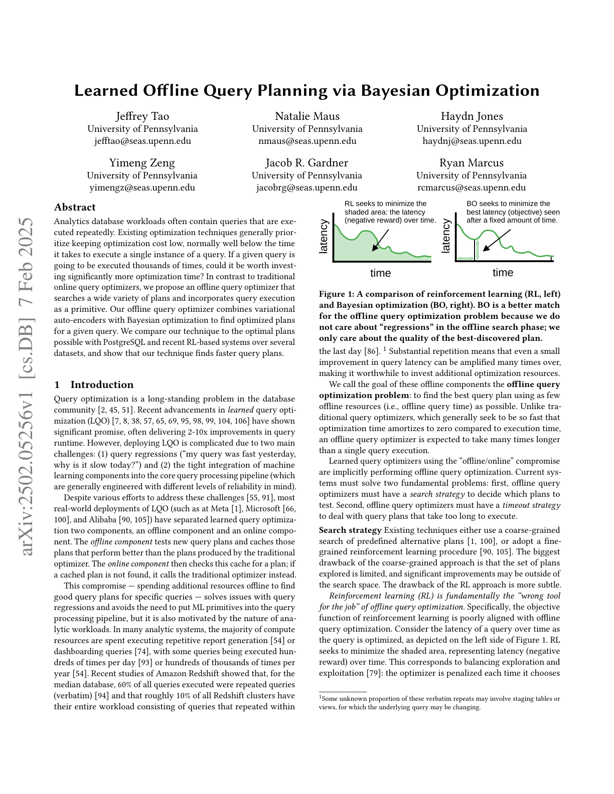
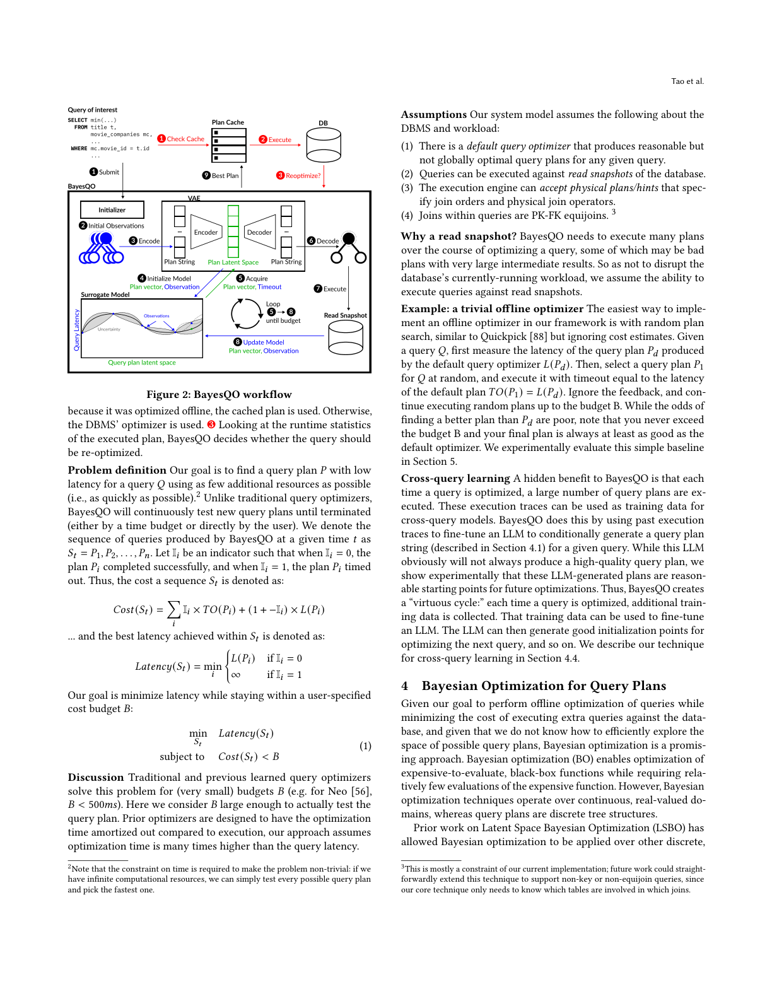
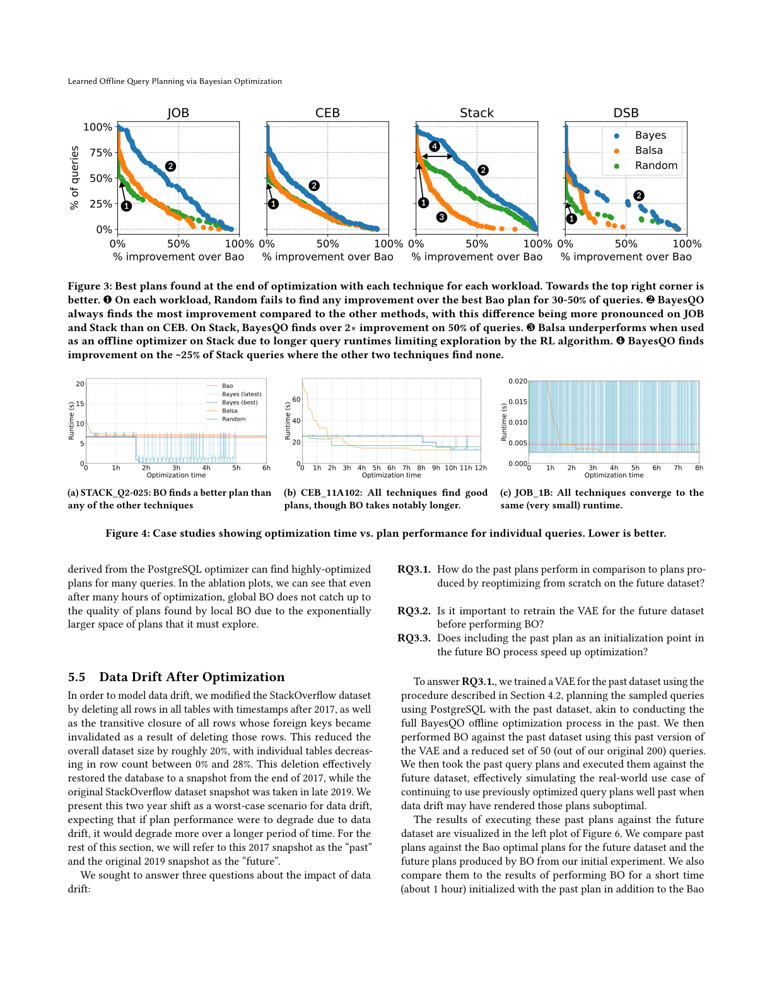
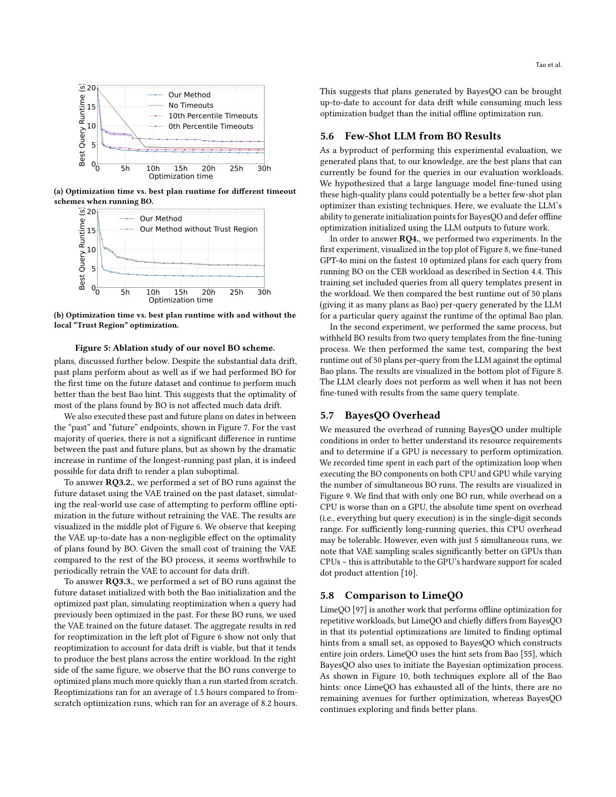
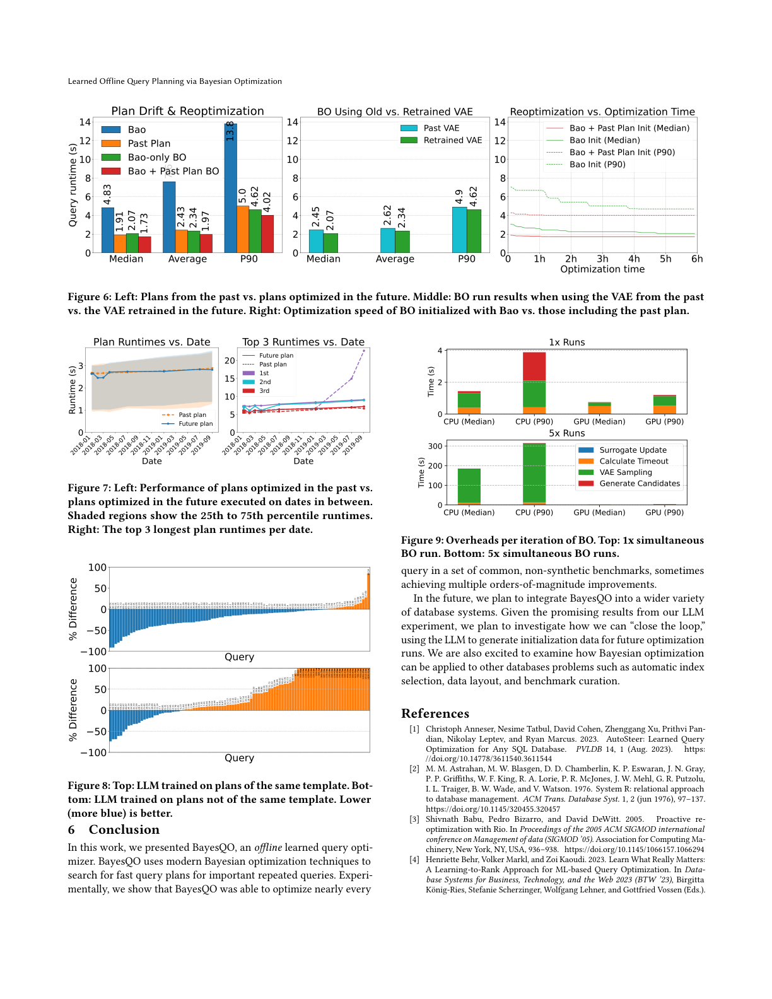

用变分自编码器 + 贝叶斯优化为重复查询寻找最优执行计划，可从容应对超时与跨查询知识迁移
分析型数据库负载常包含被反复执行的查询。现有优化技术通常优先保持较低的优化开销，一般远低于单次查询的执行时间。如果一条查询将被执行数千次，投入显著更多的优化时间是否值得？与传统的在线查询优化器不同，我们提出了一种离线查询优化器，它搜索大量计划，并将查询执行本身作为基本操作。我们的离线查询优化器将变分自编码器（VAE）与贝叶斯优化相结合，为给定查询寻找优化后的计划。我们将该技术与 PostgreSQL 可能的最优计划以及近期基于 RL 的系统在多个数据集上进行比较，结果表明我们的技术能找到更快的查询计划。
查询优化是数据库领域长期存在的问题。近期的学习型查询优化（LQO）展现出巨大潜力，常带来 2–10 倍的查询运行时间改进。然而，部署 LQO 因两大挑战而复杂：(1) 查询回归（"我的查询昨天很快，今天为什么慢了？"）；(2) 机器学习组件与核心查询处理管线紧密耦合（两者可靠性预期不同）。尽管理论上有诸多应对努力，多数真实 LQO 部署（Meta、Microsoft、Alibaba）都将学习型优化拆分为离线组件与在线组件。离线组件测试新计划并缓存优于传统优化器的计划；在线组件先查缓存，未命中才调用传统优化器。这种"离线/在线"折中——在离线投入额外资源为特定查询寻找好计划——解决了回归问题，也避免了在查询管线中放入 ML 原语，其动机来自分析型负载的特性：大量计算资源花在执行重复的报告生成或仪表盘查询上，部分查询每天执行数百次、每年执行数十万次。亚马逊 Redshift 研究显示，中位数数据库 60% 的查询是（逐字）重复查询，约 10% 的集群全部负载由时间内重复的查询构成。
大量重复意味着即便是微小的查询延迟改进也能被放大许多倍，使得投入额外优化资源变得值得。我们称这些离线组件的目标为离线查询优化问题：用尽可能少的离线资源（即离线查询时间）找到最佳查询计划。与传统查询优化器力求优化时间相对执行时间可摊销为零不同，离线查询优化器被期望花费比单次查询执行多很多倍的时间。

搜索策略。 现有技术要么使用预定义替代计划的粗粒度搜索，要么采用细粒度的强化学习。粗粒度方法的缺陷是探索的计划集有限，显著的改进可能在搜索空间之外；RL 方法的缺陷更微妙——RL 本质上是离线查询优化的"错误工具"，因为其目标函数与离线优化目标不对齐（见图 1 左：RL 最小化随时间累积的延迟面积，即平衡探索与利用的遗憾）。
超时的麻烦。 由于某些计划比其他的差数个数量级，任何学习型优化器都有非零概率命中差计划。现有方法多以固定阈值"超时"草率应对，但这些超时值有问题：(1) 代表大量浪费时间；(2) 未获得新信息（用超时值更新 RL 模型会让模型严格低估超时查询的代价）。因此成功的离线优化器必须有选择超时值并从超时查询学习的策略。
贝叶斯优化（BO）。 我们提出离线查询优化器 BayesQO，借鉴计算药物发现的最新工作：用学习的编码器/解码器将查询计划在向量（隐空间）间转换，使相似的计划在邻近向量上；再用成熟的 BO 技术在隐空间操纵编码向量，以查询执行为奖励信号。现有粗粒度技术可为每个查询生成固定计划变体集以初始化，保证最佳计划至少不差于初始化集。
我们证明现成 BO 技术可轻松适配离线查询优化目标（在最少时间内找到最快计划），BO 框架还能从容学习超时并以"计划级" learned 方式选择超时（把"查询延迟 > x"表示为删失/censored 观测，用置信区间选择超时以最大化信息增益）。最后，我们展示如何通过将语言模型微调，为 BO 搜索提供数据库特定的初始化点，从而融入跨查询信息。实验表明离线优化对某些查询可带来 10–100 倍改进，并在多个基准上几乎为每个查询找到适度改进。
我们的贡献：(1) 形式化离线查询优化问题；(2) 实现 BayesQO——应用 BO 的离线查询优化器；(3) 展示如何将高维与删失观测的 BO 进展整合进 BayesQO；(4) 展示如何用微调 LLM 将跨查询信息融入 BayesQO；(5) 展示 BayesQO 在离线场景下优于在线学习型查询优化技术。
查询优化是数据库领域的长期问题。System R 提出了如今大多数生产数据库使用的启发式优化方案（代价模型、基数估计、动态规划搜索）。传统优化器遵循"查询优化契约"——要求快速产出计划；我们认为自己的工作属于"打破契约"一类（允许侵入式检查基础数据、长时间优化、执行中自适应改计划）。相关概念还有编译器的"超优化"（用大时间预算产出最优汇编指令序列），我们的工作可视为"查询计划的超优化"。Kepler 用遗传算法与穷举执行为参数化查询映射计划空间；SlabCity 通过 SQL 级语义重写优化；DataFarm、HitTheGym 研究如何为 ML 数据库组件生成数据集。近年数据库界大量将 ML 用于延迟预测、基数估计、代价模型，或增强/替换优化器（多为在线设置，用 RL 管理探索的遗憾）。相比之下，我们因主要关注寻找延迟最优计划而采用 BO 做超优化，忽略次优计划。
BO 并非唯一样本高效技术（如 NeuroCARD、LlamaTune）。我们的计划编码受分子动力学 SELFIES 启发，但不同于 Reiner 等：我们的格式仅编码连接顺序，不编码谓词，且同一连接顺序可能有多种表示。BO 本是较老的技术，近期 ML 创新（注意力 Transformer 将序列高效映射至向量空间）使其可应用于高维非连续输入——据我们所知，这是首个将 BO 直接用于优化单个查询的工作。与 LimeQO（用离线执行找每查询最优 hint）最相似，但 LimeQO 仅考虑有限 hint 集，我们则完整构造查询计划。
挑战。 朴素策略（穷举所有计划）显然不可行：连接顺序随表数超阶乘增长（n 表连接仅二元连接有 $n!\cdot C_n$ 种，其中 $C_n$ 为第 n 个 Catalan 数）。即使"完美基数"策略，穷举基数估计也需数月，且自适应测量会陷入"逃避知识"问题。计划空间含大量差计划，执行完它们不可容忍，故离线方法须高效探索同时避免完整执行差计划；且必须利用执行候选计划所得信息指导探索——离线方法须能运行更久以获得更好结果。

系统模型。 图 2 描绘 BayesQO 架构：用户提交查询 $Q$；BO 循环——初始化策略生成计划、字符串编码并嵌入向量空间、用观测延迟初始化代理模型、采集函数选点、解码回计划、赋超时值 $TO(P)$ 在只读快照执行（成功则延迟 $L(P)<TO(P)$，否则超时）、用观测更新模型；循环至预算耗尽，最优计划入缓存。在线时若缓存命中则用缓存计划，否则用 DBMS 优化器，并据运行时统计决定是否重优化。
问题定义。 目标是在预算 $B$ 内最小化延迟：
其中 $\text{Cost}(S_t)=\sum_i I_i\cdot TO(P_i)+(1-I_i)\cdot L(P_i)$，$I_i=1$ 表示超时；$\text{Latency}(S_t)=\min_i\{L(P_i)\text{ if }I_i=0\text{ else }\infty\}$。
跨查询学习。 BayesQO 的隐藏收益：每次优化都执行大量计划，这些执行轨迹可作跨查询模型训练数据。我们用过往轨迹微调 LLM，使其为给定查询条件生成计划字符串，作为未来优化的合理起点，形成"良性循环"。
BO 能在极少评估下优化昂贵黑盒函数，但 BO 操作连续实值域，而查询计划是离散树结构。隐空间贝叶斯优化（LSBO）用深度自编码器（DAE）将离散结构化搜索空间 $X$ 转为连续数值空间 $Z$。受此启发，我们定义查询计划的字符串编码格式（§4.1），在该格式字符串上训练 VAE（§4.2），在 VAE 隐空间执行 BO（§4.3），并在超时选择（§4.3.1）上做出贡献，最后讨论初始化策略（§4.4）。
设计要求： (1) 完备性——任何有效计划必须可表示为字符串；(2) 解码有效性——任何字符序列必须对应唯一有效计划。理想表示还应是单射的（每字符串对应唯一计划），但我们无法同时满足三者，故采用"完备 + 解码有效但不单射"的折中（类似 SELFIES 优于 SMILES 的经验）。
字符串语言。 我们为二叉树结构的连接树（定义连接顺序与算子）设计编码：每连接子树表示为 3 符号序列（左、右、算子），每个物理连接算子（hash、merge、nested loops）有唯一符号，叶子为基表符号。解码有效性通过"从左到右维护部分连接树状态，遇非法符号则确定性地替换为合法符号"的技巧保证——使所有字符串都解码为有效计划，且相似的非法字符串映射到略有不同的有效计划。
为应用 BO，我们训练 DAE（此处为 VAE）：编码器 $\Phi: X\to Z$，解码器 $\Gamma: Z\to X$，训练最大化证据下界（ELBO）：
VAE 的正则化（KL 项）使搜索空间平滑，便于优化。训练数据约 100 万编码计划，仅需 DBMS 元数据、无需查询执行：从模式采样随机 PK-FK 等连接查询，用默认优化器（如 PostgreSQL）规划并编码，并借助 hint 扩充多样性。每个数据库训练一次 VAE 后复用。
BO 构建目标函数的概率代理模型并迭代精炼，步骤：(1) 初始化代理模型；(2) 采集函数选下一点平衡探索/利用；(3) 执行对应计划得真实值；(4) 更新模型。我们用 Thompson Sampling 作采集函数。针对高维/离散，我们采用局部 BO（TuRBO），维护超矩形"信任区域"动态调节大小与位置，平衡全局探索与局部利用。
右删失观测（Right-Censored Observations）。 超时即"延迟至少 $\tau$"（$f(x)\ge \tau$），用 Tobit 模型似然直接建模删失：
我们选用近似高斯过程（SVGP），其 ELBO 为：
4.3.1 带删失观测的 BO。 我们将 SVGP 扩展至删失 BO 设置，推导新 ELBO（未删失项可解析计算，删失项用 Gauss-Hermite 求积）。关键在于基于不确定性的超时选择：对每个候选计划 $x_t$ 动态设阈值 $\tau_t$，使在条件于删失观测 $(x_t,\tau_t)$ 后，我们确信当前最优计划 $x^*_t$ 仍优于候选；理想取最小这样的 $\tau_t$：
因 $\mu'_t(\tau)-\kappa\sigma'_t(\tau)$ 通常随 $\tau$ 单调，可用二分搜索求解。
BO 初始用采集函数选点（等价于随机点）。实践中用小批高质量 $(x,f(x))$ 初始化更有利：Hinted plans (Bao)——用接受 hint 的传统优化器穷举连接/扫描 hint 组合，每查询生成 49 个初始化点（保证含 Bao 可能选的最优计划）；默认优化器计划——单点初始化，实践中效果不佳；LLM——收集 606 次 BayesQO 运行的轨迹，取每查询 top-1/top-5 计划微调 GPT-4o-mini 一个 epoch，为新查询采样 50 个初始化点，常能产出最佳初始化。
我们还实现随机计划搜索（完全基于探索）：从不含交叉连接的计划空间中随机采样（构造生成树）。其可行性暗示可在无传统优化器时进行离线优化。
我们回答四个研究问题：RQ1 给定时间预算下降低延迟的有效性（§5.2, §5.3）；RQ2 BO 修改的重要性（§5.4）；RQ3 对数据漂移的鲁棒性与重优化（§5.5）；RQ4 能否从离线结果训练 LLM 泛化到未见查询（§5.6）。

为回答 RQ1，我们给每技术相同优化预算（4000 次计划执行），比较相对 Bao 最优计划的改进百分比累积分布。BayesQO 在三个负载上都找到更多高性能计划：JOB 与 Stack 差异显著，CEB 上各技术相近，DSB 上多数查询无显著改进但改进处 BayesQO 略优。
图 4 展示三查询的优化过程（最佳计划运行时间随优化时间变化）。图 4a：BO 约 1.5 小时在信任区域内发现显著更优计划并快速利用；Random 与 Balsa 均未超越 Bao 最优。图 4b：所有策略数小时后收敛到同一最优，但 BO 比 Random/Balsa 更慢找到（说明空间含许多近似好计划）。图 4c：所有技术很快收敛到同一（极短）运行时间，Balsa 因最小化遗憾的"利用" plateau 而最慢，进一步证明 RL 不适合离线优化。

图 5a 显示：较长超时让代理模型对不确定区域更有信心；我们的不确定性超时方法使 BO 在更少预算下找到更快计划。图 5b 证明信任区域局部 BO 优于全局 BO（全局 BO 因需探索指数更大空间，即便数小时也赶不上局部 BO）。
我们删除 StackOverflow 2017 年后所有行（及外键失效的传递闭包），将数据集缩小约 20%，模拟两年漂移的最坏情形（"past" vs "future"）。回答三问：RQ3.1——past 计划在未来数据集上表现几乎与首次 BO 相同，远优于最佳 Bao hint，说明 BO 找到的计划最优性不受漂移太大影响；RQ3.2——保留 VAE 最新对计划最优性有不可忽略影响，鉴于训练 VAE 成本低，值得定期重训；RQ3.3——将 past 计划作为初始化点重优化不仅可行，且产出整个负载上最佳计划，重优化平均 1.5 小时 vs 从头 8.2 小时。

我们用 CEB 负载上 BO 每查询最快的 10 个计划微调 GPT-4o-mini。第一实验（同模板微调）LLM 生成的 top-50 计划常优于 Bao 最优；第二实验（扣留两个模板）LLM 明显变差，说明基于查询模板的历史经验至关重要。
图 9 显示：单 BO 运行时 CPU 开销为个位数秒（查询足够长时可接受）；即便 5 路并发，VAE 采样在 GPU 上扩展远优于 CPU（得益于缩放点积注意力的硬件支持）。
LimeQO 同样做重复负载离线优化，但仅从小的 hint 集找最优 hint；BayesQO 构造完整连接顺序。两者都用 Bao 的 hint 集初始化，但 LimeQO 穷尽 hint 后无进一步优化空间，BayesQO 继续探索找到更好计划。
本文提出 BayesQO——一个离线学习型查询优化器，用现代贝叶斯优化技术为重要重复查询搜索快速计划。实验表明 BayesQO 能在 JOB、CEB、Stack、DSB 等常见非合成基准上优化几乎每个查询，有时达到多个数量级的改进。未来我们计划将 BayesQO 集成到更多数据库系统，并基于 LLM 实验"闭环"——用 LLM 为未来优化生成初始化数据；也期待将 BO 应用于自动索引选择、数据布局、基准生成等问题。